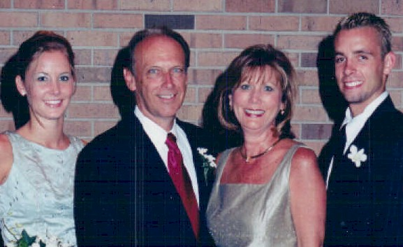
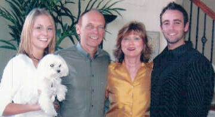
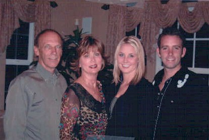
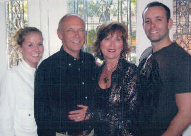
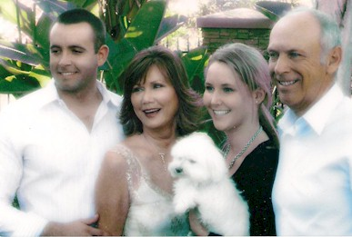
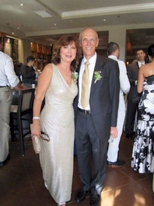
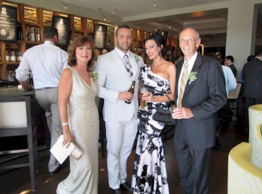
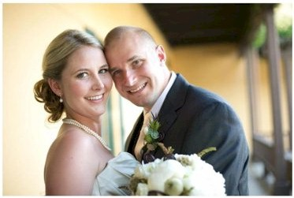

BHS 1967 Class Member
Trudi (Greene) Galey
Click to Email
Click to Email
 1967 |
 2002 (Trudi Greene Galey, hubbie Mike, son Matthew and daughter Christina) |
|  2003 |
 2005 |
|  2006 |
 2009 |
|  2012 |
 2012 - Trudi, Matthew & friend, and Mike |
|  2012 - Christina and husband |